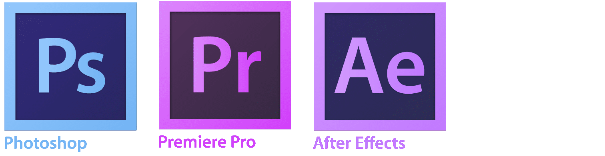

Experience
History
My fascination with computers and programming reaches as far back as my very early teens when I inherited a BBC MICRO. I figured out how to fill the screen with my name using a loop and was immediately hooked. Over the next few years I found more to love about computing. The first language I learnt in depth was Visual Basic. Once I had an internet connection I began experimenting with HTML, tweaking existing web pages and building my own with a basic text editor. My interest grew and grew as I learned about other programming languages and the existence of open source Linux operating systems.
At some point during college I became interested in photography. This led me to quite an abrupt but rewarding decision to switch from a maths and computing course to a focus on photography, achieving a BSc (Hons) in Photography and Media Production. Soon after graduating I began working as a clinical photographer in the NHS.
Throughout my clinical photography career my interest in web design continued. Over the years I've had the opportunity to build websites for colleagues as well as a number of portfolio sites for my personal photography.
Now, having spent over ten years as a clinical photographer, I find myself being drawn back to web development with even more enthusiasm than before.
Coding Skills
My experience lies in the following:
- HTML and CSS/SCSS
- JavaScript (including ES6)
- PHP
- Laravel
- ReactJS + Redux
- VueJS + Vuex
- NodeJS
- Using and building APIs
- Relational databases including MySQL and PostgreSQL
- Package managers including NPM and Composer
- Git and GitHub for version control
My first venture back into web development began with learning JavaScript. Once I felt confident with my abilities I moved on to React which was a real eye opener to the possibilities of modern web development. From there I learnt to build similar products using Vue and soon after delved back into PHP and began experimenting with Laravel. The learning never ends and never gets dull.
Design Skills
Having trained and worked as a photographer and videographer, I also have extensive experience using creative editing software. I have been using Adobe products including Photoshop, Illustrator and Premiere Pro for over ten years. I also have experience with similar software including Inkscape and GIMP.

I enjoy using Illustrator or Inkscape to create vector graphics for logos and icons, although I feel most comfortable in Photoshop, not surprisingly due to my extensive background in photography.
To see some examples of my work take a look at the Projects page and please get in touch if you'd like to collaborate or find out more.